Migrate before the deadline with a complete migration system — not scattered docs, rushed testing, and last-minute decisions.
Plan, prioritize, replace, test, and roll out with less chaos.
Built for real migration pressure: strategy, execution, QA, and rollout support.
46-slide playbook • Migration tracker • QA testing matrix • Weekly triage guide
Boilerplate vault • AI prompt library
Built for structured migration workflows across:
If your store still relies on legacy Shopify Scripts, waiting longer increases avoidable risk.
This system helps your team move earlier, with a clearer migration path and less operational chaos.
Start with a safer migration workflow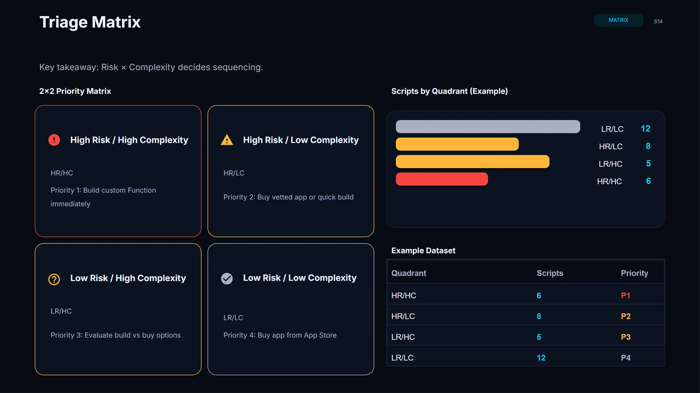
This is not just a deck. It combines strategy, execution tracking, QA structure, and developer-ready assets in one workflow. Designed to help teams move from planning to rollout with less guesswork and fewer blind spots.
A 46-slide strategic guide for planning and decisions.
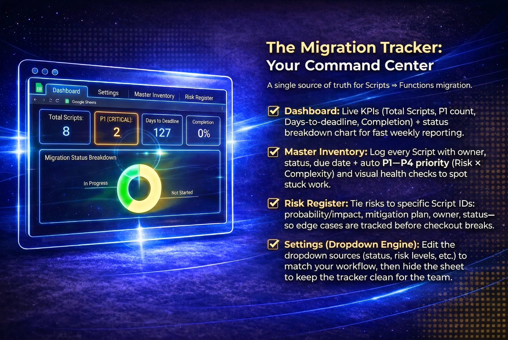
An execution tracker for ownership and status mapping.
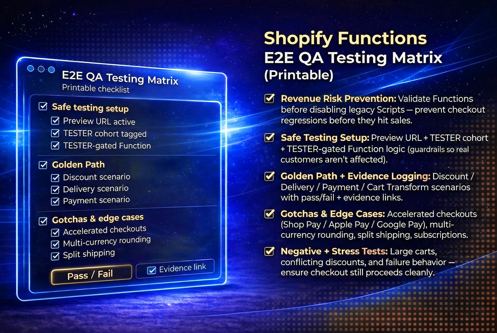
A printable end-to-end validation checklist.
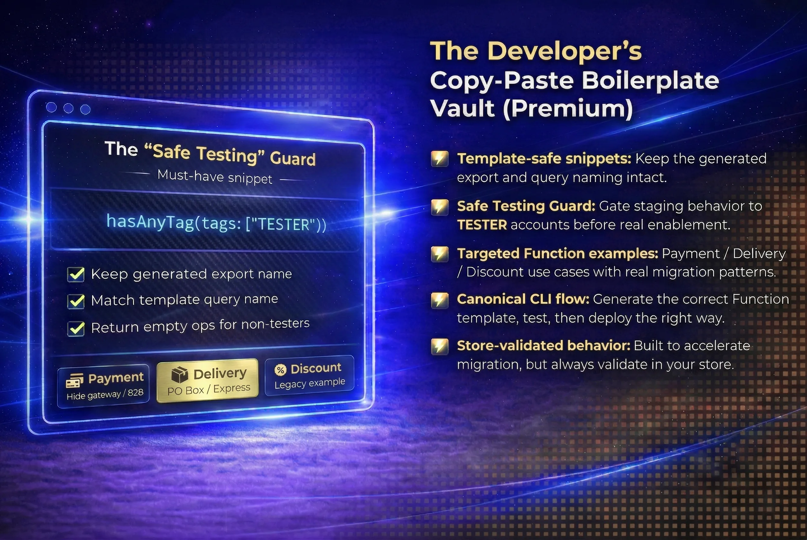
Reusable boilerplates for safer Function builds.
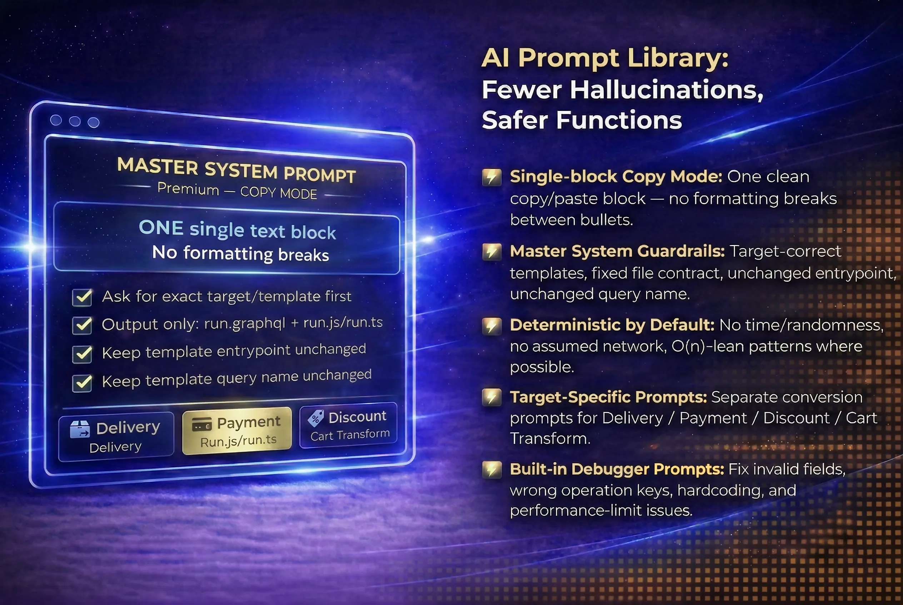
Targeted prompts for safer Function migration workflows.
No fluff. Just the actual working documents and toolkits you get inside.
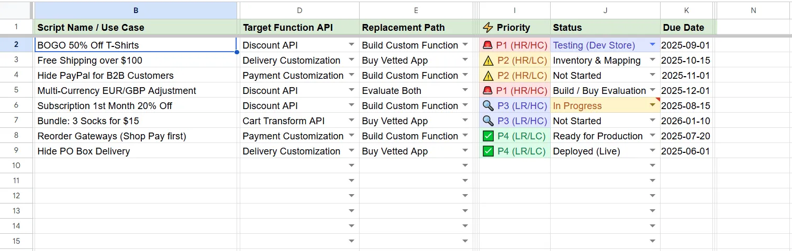
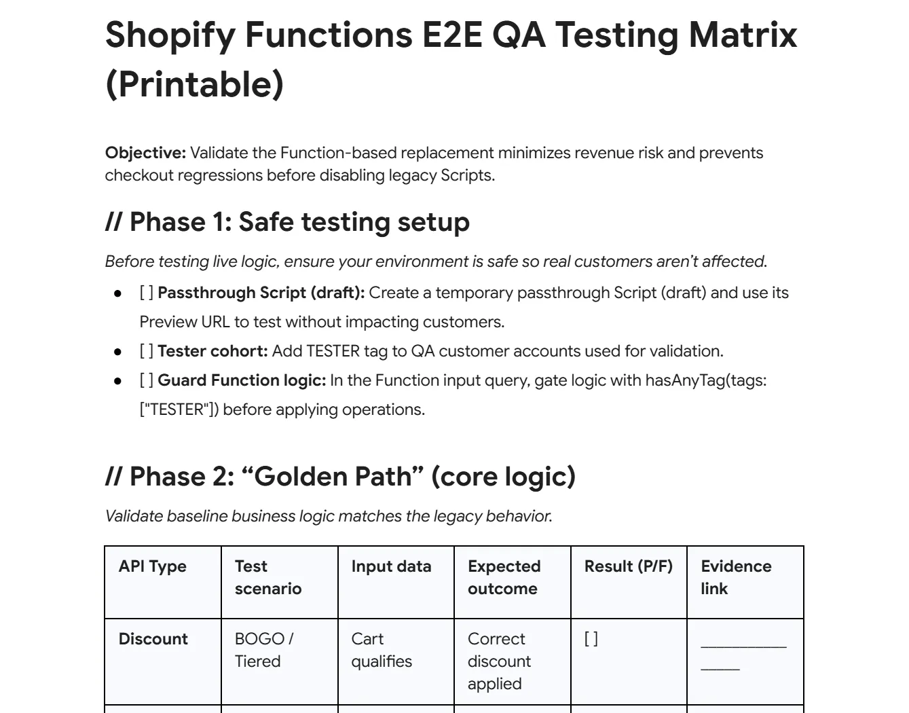
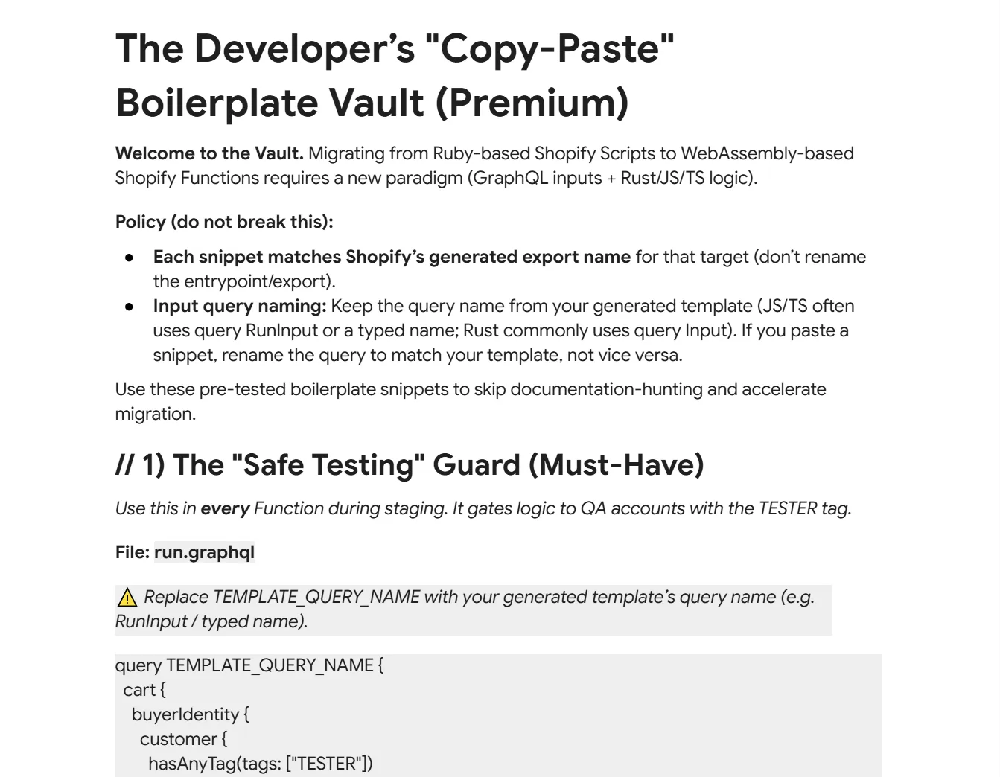
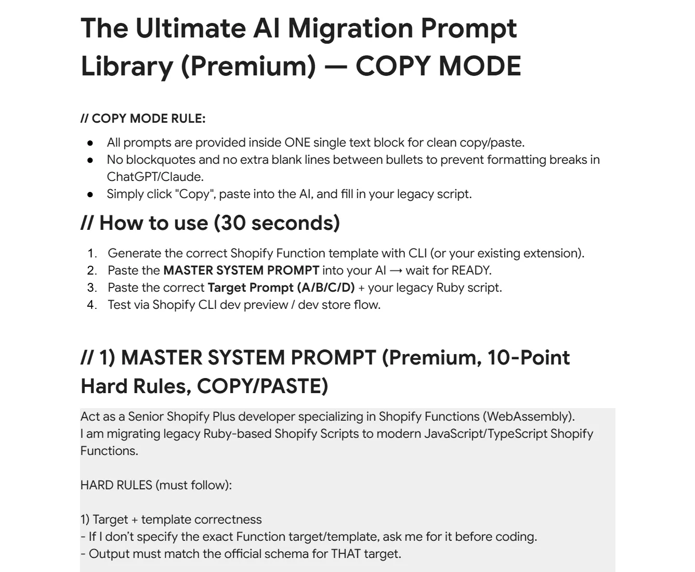
A consulting-style guide for planning, replacement decisions, testing logic, and rollout readiness.
A practical command layer for inventory, prioritization, ownership, and weekly progress.
A structured end-to-end validation checklist built to reduce checkout regressions before cutover.
Prebuilt implementation support assets for safer Function development and faster iteration.
The playbook is built to help teams move from planning to cutover with a clearer operating model. Built for teams that need a structured migration workflow, not generic ecommerce advice.
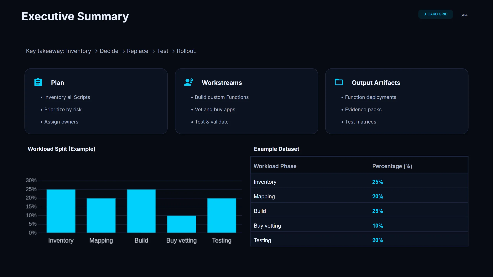
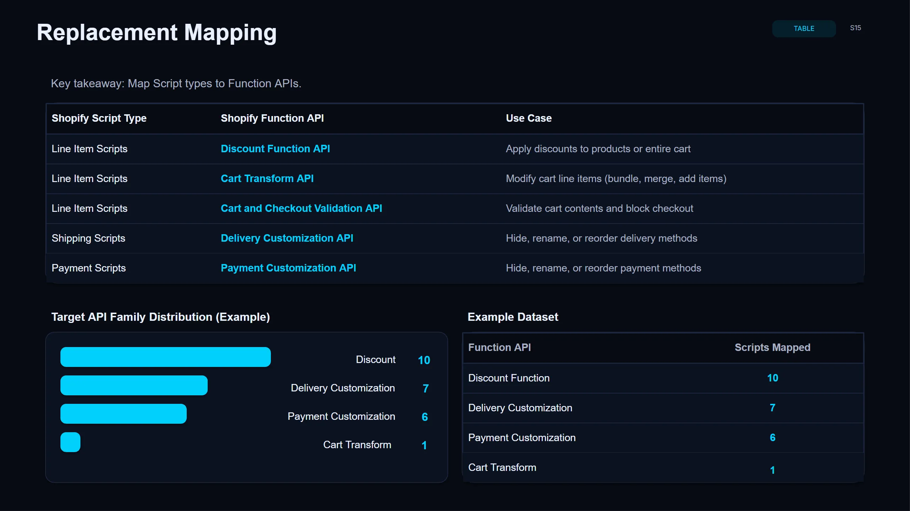
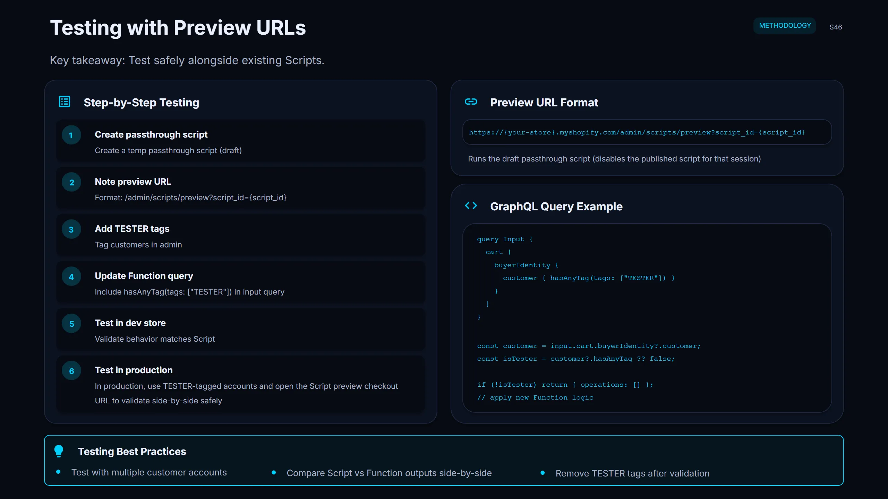
For internal ecommerce teams that need to protect checkout behavior and reduce migration risk.
For partners managing one or multiple client migrations with clearer process and stronger deliverables.
For teams building custom Function replacements who need faster implementation support and safer testing structure.
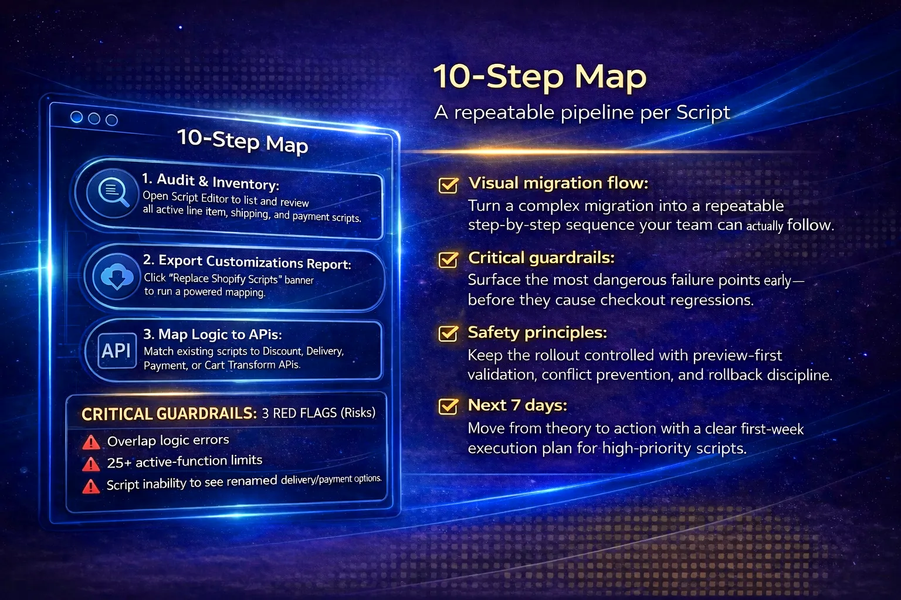
Most migration resources stop at information. This one is built to help teams operate.
It connects:
That means less guesswork, less scattered documentation, and less last-minute chaos close to the deadline.
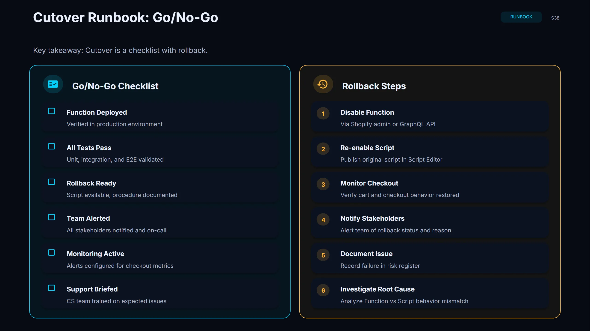
Get the exact tools you need to plan, track, and execute your migration safely.
Best for merchants or teams who want the strategy, constraints, and a clear migration plan first.
What's included:
Best for teams actively executing the migration and wanting a real execution system, not just a deck.
Everything in BASE, plus:
Best for agencies and consultants handling migrations across multiple client stores.
Everything in CORE, plus:
Need only one tool? Individual components are also available separately from $19.
Get the structured migration system now — and move with more clarity, better prioritization, and safer rollout control.